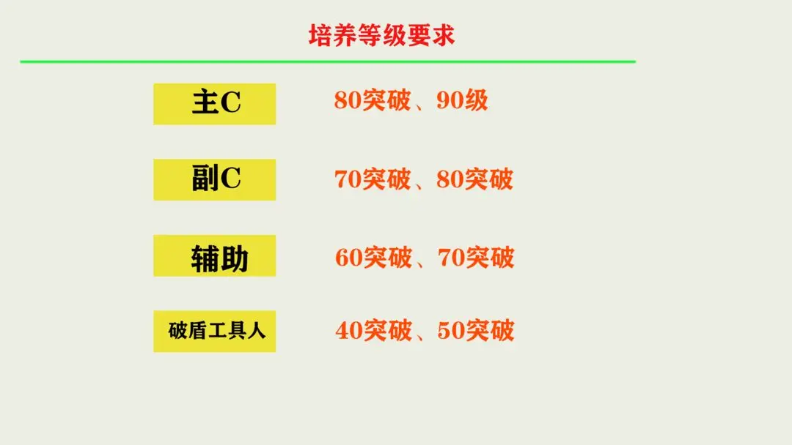

角色培养
1. 前期 资源比较匮乏，资源投入基本是在主C上面。
2. 中期的话，开始有了主C、副C、辅助、破盾工具人的概念。这时候要开始培养副C，来补充主C的伤害，或是弥补主C的输出空档期。
3. 后期，副C已经基本成型。我们要把培养的方向转向辅助，尤其是增伤辅助。我个人认为中期跟后期的分界点在于能否满星过12层（因为过完12层后，会少很多压力）。
天赋突破
1. 第一档 6级，不需要周本材料。
2. 第二档7、8级，需要一个周本材料。
3. 第三档9、10级，需要两个周本材料。（10级单独做为一档也行）
4. 我们可以根据角色的定位，来决定他们的天赋升级要求。一个角色是可以多个定位的，下图只是稍微划分，举个例子而已
等级要求

1. 主C 得80突破，大后期考虑升90级。
2. 副C70突破，后期可以考虑80突破。
3. 辅助60突破，或者有比较重要的技能需要升7级、8级的，可以70突破（还能白嫖一个相遇之缘）。